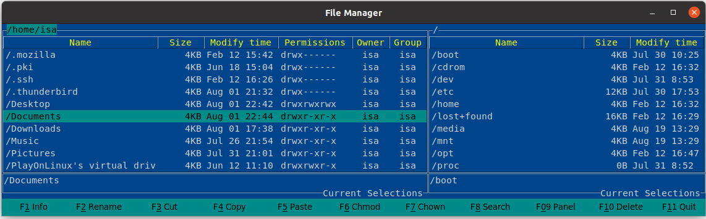

Usage
{kind=link}
File Manager is a graphical file manager for Linux. The main interface consists of two panels which display the file system.
- Navigation:
The active panel can be identified by the highlighted bar in the directory listing, which can be moved up and down with the arrow keys.
Users can switch between panels using <TAB> key.
<Enter> key is used for selecting directory or opening a document using its default application.
Function keys perform operations such as renaming, deleting and copying files.
Keyboard shortcuts: Cut - <Ctrl+X>, Copy - <Ctrl+C>, Paste - <Ctrl+V> .
All elements of the File Manager can be accessed using mouse clicks as well.
The bottom row shows all functionality available for easier accessibility. The buttons’ functions are fairly self-explanatory.
Button |
Description |
|---|---|
F1 Info |
Display system information. |
F2 Rename |
Renames file or directory. |
F3 Cut |
Marks file or directory ready to be moved. |
F4 Copy |
Marks file or directory ready bo be copied. |
F5 Paste |
Moves/makes copy of file or directory in selected location. |
F6 Chmod |
Sets the permissions of file or directory. |
F7 Chown |
Changes ownership of file or directory. |
F8 Search |
Search for file or directory in root directory, home direcoty or current directory. |
F9 Panel |
Changes active panel listing mode. /Standard, Full/ |
F10 Delete |
Deletes file or directory. |
F11 Quit |
Close button. |